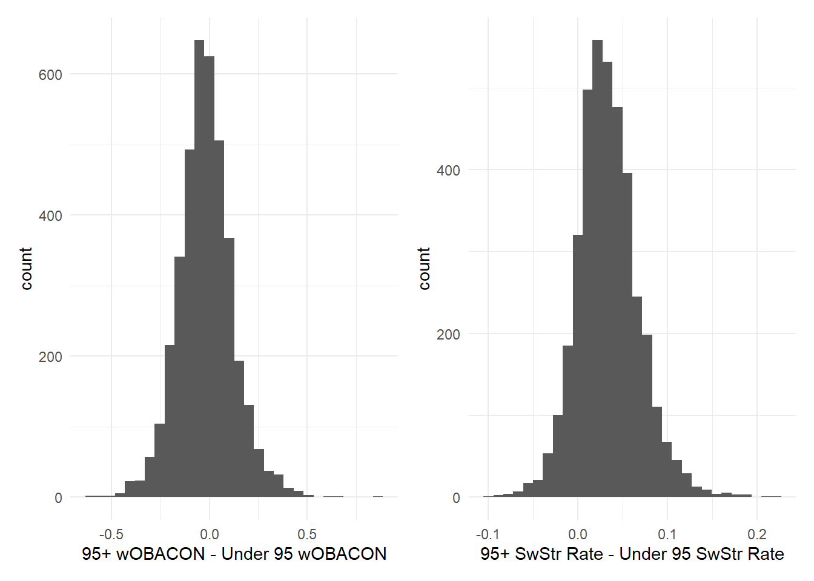
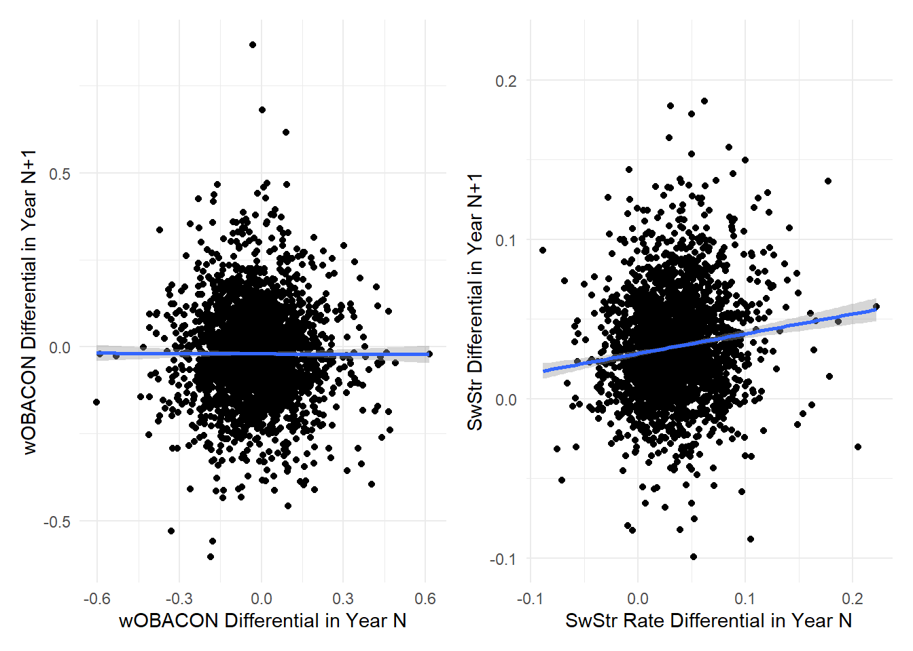

One avenue of analysis I see most around the postseason when individual batter-pitcher matchups or team matchups are more heavily scrutinized is bucketing offensive performance by velocity faced, specifically against fastballs. An analyst might posit “This bullpen has thrown X percent of its fastballs over 95 mph and this team has produced a Y wOBA on such pitches.” Or something along the lines of “John Doe is going to have a tough go of it against this teams cadre of high octane arms; he has posted an X wOBA on fastballs over 95 mph, versus Y on fastballs below that threshold.” Similar points might be made in an analysis of a player in the midst of a slump during the championship season (instances that come to mind are various pieces related to Jose Abreu from 2023, for example). In all of these cases, the performance against what many would call “premium velocity” or “95+”, which at this point in time I would argue does not constitute premium velocity (reminds me of this Effectively Wild episode), is certainly descriptive. We take what happened in the past, create a cutoff (albeit an arbitrary one), and calculate the respective wOBAs.
That is all well and good, a description of that happened in the past. But I have few points of contention with type of analysis, either at the player or team level. The first, which I have already alluded to, is the arbitrary point at which most decide to bucket the data. This is almost always 95 mph. I am not aware of why this became the accepted line of demarcation; I would guess it just looks like a nice round number. Or maybe it is related to MLB’s definition of a hard hit ball, also 95 mph. Nevertheless, I can appreciate the desire to bucket information for ease of analysis or understanding. Modelling this in a continuous manner and presenting the results is often a more cumbersome endeavor and may lose some of the readers. A trivial comparison of performance on either side of a cutoff is more digestible. I suggest in the future, maybe we use cutoff based on velocity percentile? League-wide velocity is not a static figure, thus the significance of the 95 mph figure is different in say 2023 versus 2015.
The arbitrary buckets are one issue, but like I said I can understand the impetus for wanting to structure analysis in this way. My main issue the the usefulness of this information altogether, in that I am very skeptical that this sort of analysis yields valuable insights into performance in the past or future. The usage of wOBA as the measure of choice belies a player/team’s performance against higher velocity pitches because it only considers pitches that mark the end of a plate appearance. All of the fastballs that a player swings through with either zero or one strike are not considered at all. Furthermore, using wOBA muddies the picture by not distinguishing whether a player/team struggles with making contact or producing damage on contact. If you want to demonstrate an effectiveness (or lack thereof) against velocity, these two skills need to be separated out. The easiest method would be to consider whiff or swinging strike rate and wOBACON (or some measure concerned solely with contact quality). This criticism does not apply to all analyses of this type, but it is something that I see quite often and think needs to be adjudicated. I understand this distinction can be a bit tricky. It requires a few different Savant searches and some spreadsheet jockeying. But failing to make this distinction prohibits any conclusions one draws from being revealing.
Now, let us move on to the functionality of bucketing performance by velocity faced, even after making the distinction between contact and contact quality. Looking at contact (in the form of swinging strike rate) or contact quality (in the form of wOBACON) there has been been a standard bell curve for deviations in performance against higher and lower velocity, looking solely at players who accumulated 100 plate appearances in a given season since 2015.
There are a few conclusions we can draw from these figures. First, these look like standard Gaussian distributions. The swinging strike rate figure is centered close to around 0.05 (i.e. the median player has a swinging strike rate about five percentage points higher against 95+ mph fastballs). The wOBACON plot is similarly shaped, but around 0 (i.e. the point where there is no difference between a player’s wOBACON when you bucket balls in play by velocity faced). The shapes of both figures indicates one of two things: either the talent in facing higher end velocity (relative to lower velocity) is normally distributed in MLB or the differences in the two figures are random around the league-wide mean. The fact that the wOBACON figure is centered around zero lends credence to the latter; intuitively players should not be expected to produce better against higher velocity. Therefore, using a threshold of 100 PAs, looking at a season’s worth of PAs is not sufficient in judging a player’s ability to face high end velocity. For swinging strikes, there is a bit more to consider given the center of the distribution is located at a value that makes sense; we expect (and know) that higher velocity pitches (all else being equal) result in more whiffs. But still, within a season, any difference that deviates from that medium is mostly noise because year over year, there is little to no consistency in those deviations

This whole post is a long-winded plea to caution analysts looking to find signal in any velocity-based splits when it comes to batting performance (this can undoubtedly be said for any analysis leveraging splits). We know facing higher end velocity is going to result in lower offensive performance on the whole(evident in the depressed offensive environment of the postseason). But there is little to no evidence that players are particularly adept or poor at facing high end velocity relative to lower velocity at the major league level. There might be something to explore when looking at minor league players, where the distribution of talent is much wider. Without extensive minor league pitch-tracking publicly available, however, this is not possible to verify at this point in time.